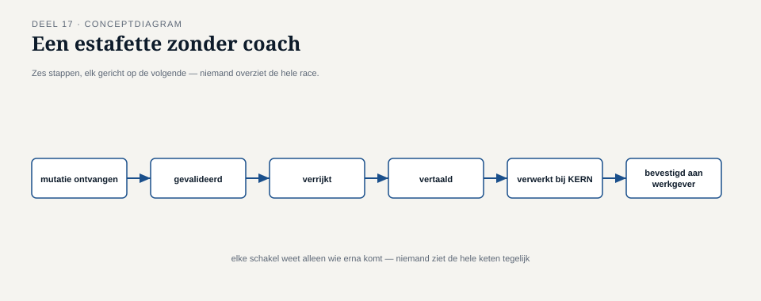
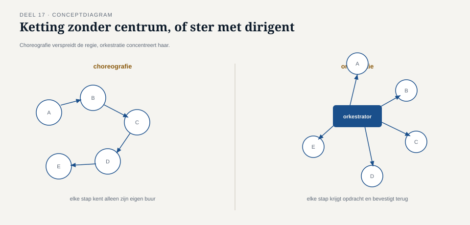

Deel 17 — Orkestratie versus choreografie
Reader · Ductus-cursus Enterprise Integration Patterns · niveau 2 (professional) · deel 17 van 22
17.0 Wie besliste dat de uitkering mocht doorgaan?
Een deelnemersproces bij Meridiaan — het starten van een pensioenuitkering na pensionering — bleek, bij nader onderzoek naar aanleiding van een klacht, uit zes stappen te bestaan die over vijf verschillende systemen waren verspreid: KERN registreerde de pensioendatum, de externe administrateur berekende het uitkeringsbedrag, de risicomanagementafdeling voerde een fraudecontrole uit, de uitkeringsadministratie startte de daadwerkelijke betaling, het Werkgeversportaal informeerde de voormalige werkgever, en de communicatieafdeling verstuurde een bevestigingsbrief.
Elke stap reageerde, via het mutatie-gebeurd-kanaal (deel 2, deel 6), op de gebeurtenis die de vorige stap produceerde: KERN publiceerde "pensioendatum geregistreerd", de administrateur luisterde daarop en publiceerde na berekening "uitkeringsbedrag vastgesteld", risicomanagement luisterde daarop, enzovoort — een keten van reacties op reacties, zonder één component die het geheel overzag.
Toen de klacht binnenkwam — een deelnemer wiens uitkering vier weken te laat startte — kon niemand in één oogopslag zien waar in de keten van zes stappen de vertraging zat, wélke stap op wélke andere stap wachtte, of wat er zou moeten gebeuren als een stap werd overgeslagen. Elk team kende alleen zijn eigen stap; niemand kende het geheel. Dit is een ander probleem dan deel 15 behandelde: niet "waar is dit specifieke bericht", maar "wie is verantwoordelijk voor het feit dat dit hele proces correct doorloopt".

17.1 Choreografie: wat er al was, zonder dat iemand het zo noemde
Wat er bij Meridiaan al bestond, is een architectuurstijl die choreografie heet: elke component reageert zelfstandig op gebeurtenissen van andere componenten, zonder een centrale regisseur. Elke "danser" (component) kent zijn eigen bewegingen en reageert op signalen van anderen, maar niemand staat aan de zijlijn met het complete script.
Dit is, zoals de naam al suggereert, direct verwant aan de publish-subscribe-architectuur uit deel 2 en 6, en aan de event backbone uit deel 11 — choreografie is in essentie wat er ontstaat wanneer je meerdere event-gedreven stappen simpelweg na elkaar laat reageren, zonder een aanvullende laag toe te voegen. De sterke punten van choreografie zijn precies de sterke punten van publish-subscribe: lage koppeling (elke component hoeft alleen te weten op welke gebeurtenissen hij reageert, niet wie er nog meer in de keten zit), en eenvoudige uitbreidbaarheid (een nieuwe stap toevoegen betekent alleen: abonneer op het juiste event, publiceer het volgende — geen bestaande componenten hoeven aangepast te worden).
Het probleem dat 17.0 blootlegde, is echter ook inherent aan choreografie: er is geen enkele plek waar het geheel van het proces expliciet is vastgelegd. De volgorde van de zes stappen bestaat alleen impliciet, verspreid over zes losse abonnementsconfiguraties bij vijf teams — precies zoals de verborgen volgorde-aanname uit deel 6 (audit-trail die impliciet op het Nabestaandenloket wachtte) een risico bleek te zijn wanneer hij nergens was vastgelegd. Choreografie schaalt dit risico op: bij twee stappen is een impliciete afhankelijkheid nog te overzien; bij zes stappen, verspreid over vijf teams, is dat niet meer het geval.
Kernzin 18 van de cursus: choreografie maakt elke individuele stap eenvoudig, ten koste van het overzicht over het geheel — de prijs wordt onzichtbaar totdat iemand moet uitleggen waarom het geheel niet werkt.
17.2 Orkestratie: één component die het script kent
Orkestratie kiest de tegenovergestelde aanpak: één centrale component — de orkestrator — kent het volledige proces expliciet, en stuurt elke stap actief aan door commands te versturen naar de betrokken systemen, in plaats van dat elke stap zelfstandig op events reageert. De orkestrator is, in termen van deel 3, de partij die elke stap als een command-met-verwachte-reactie behandelt, en op basis van dat antwoord beslist wat de volgende stap is.
Toegepast op het uitkeringsproces zou een orkestrator: een command "registreer pensioendatum" naar KERN sturen, wachten (asynchroon, non-blocking — deel 3) op bevestiging, dan een command "bereken uitkeringsbedrag" naar de externe administrateur sturen, enzovoort, met op elk moment één plek waar het complete proces, inclusief de huidige voortgang, expliciet zichtbaar is.
Dit lost het probleem van 17.0 rechtstreeks op: bij een klacht over een vertraagde uitkering kan de orkestrator direct worden geraadpleegd (vergelijkbaar met de control bus uit deel 15) om te zien op welke stap het proces op dit moment wacht. Het brengt echter een eigen prijs met zich mee die het spiegelbeeld is van choreografie's zwakte:
De orkestrator wordt een centrale afhankelijkheid voor het hele proces — vergelijkbaar met de broker-afweging uit deel 11 (gedeelde infrastructuur, storing raakt potentieel alles), nu toegepast op procesniveau in plaats van transportniveau.
Elke wijziging aan het proces vergt een wijziging in de orkestrator, wat de lage koppeling van choreografie tenietdoet: een nieuwe stap toevoegen aan een georkestreerd proces betekent het aanpassen van de centrale orkestratielogica, niet simpelweg het abonneren op een bestaand event.
Vuistregel: kies orkestratie wanneer het proces zelf, als geheel, een eigenaar en een expliciet te bewaken voortgang verdient; kies choreografie wanneer de stappen onafhankelijk moeten kunnen evolueren en geen enkele partij het geheel hoeft te "bezitten".

17.3 Geen zuivere keuze: het uitkeringsproces heronderzocht
Net als bij de architectuurstijlkeuze in deel 11 is de praktijk zelden zuiver. Bij Meridiaan is, na het incident van 17.0, niet gekozen voor volledige orkestratie van het hele uitkeringsproces, maar voor een gelaagde aanpak die de sterke punten van beide stijlen combineert:
Een orkestrator is geïntroduceerd voor de kern van het proces — de vijf stappen die strikt opeenvolgend en onderling afhankelijk zijn (pensioendatum → bedrag → fraudecontrole → betaling), met expliciete voortgangsbewaking en een directe koppeling naar de control bus voor statusopvragingen.
De laatste stap (communicatie naar de voormalige werkgever en de bevestigingsbrief) bleef choreografisch — deze twee acties zijn onderling onafhankelijk van elkaar (de een hoeft niet te wachten op de ander) en hebben geen invloed op de kern van het proces zelf; ze reageren simpelweg op het "uitkering gestart"-event, zoals ze altijd al deden, zonder dat de orkestrator ze expliciet hoeft aan te sturen.
Deze keuze weerspiegelt een criterium dat verder reikt dan "hoeveel stappen zijn er": is er een bindende, onderling afhankelijke volgorde die bewaakt moet worden (orkestreer die), of zijn er onafhankelijke reacties op een afgerond feit (laat die choreografisch)? Bij Meridiaan bleken de eerste vier stappen strikt van elkaar afhankelijk (je kunt geen fraudecontrole doen zonder bedrag, geen betaling zonder goedgekeurde fraudecontrole), terwijl de laatste twee onafhankelijke, parallelle reacties op hetzelfde eindresultaat waren.
17.4 De relatie met eerdere delen
Deze keuze is geen nieuw, geïsoleerd concept — hij bouwt direct voort op onderscheidingen die de cursus al eerder maakte:
Orkestratie is verwant aan het recipient list-patroon uit deel 12, maar met een cruciaal verschil: een recipient list stuurt één bericht naar meerdere, onafhankelijke bestemmingen tegelijk (parallelle verspreiding), terwijl een orkestrator stappen doorgaans sequentieel aanstuurt, waarbij de uitkomst van de ene stap bepaalt of en hoe de volgende wordt gestart.
Choreografie is, zoals in 17.1 vastgesteld, in essentie meerdere event-gedreven stappen die simpelweg na elkaar reageren — geen nieuw mechanisme, maar een naam voor een specifiek gebruikspatroon van publish-subscribe (deel 2, deel 6) over meerdere stappen heen.
De keuze tussen beide is, net als de architectuurstijlkeuze in deel 11, een schaal- en eigenaarschapsvraag, geen technische beperking: dezelfde messaging-infrastructuur (deel 16) kan zowel choreografie als orkestratie faciliteren; het verschil zit in hoe de logica van "wat gebeurt er wanneer" wordt georganiseerd, niet in welke broker-technologie eronder ligt.
Samenvatting van deel 17
- Choreografie laat elke component zelfstandig reageren op gebeurtenissen van andere componenten, zonder centrale regie — lage koppeling en eenvoudige uitbreidbaarheid, ten koste van het ontbreken van één plek waar het geheel van een proces expliciet is vastgelegd.
- Orkestratie introduceert een centrale orkestrator die het volledige proces expliciet kent en elke stap actief aanstuurt — expliciet overzicht en voortgangsbewaking, ten koste van een centrale afhankelijkheid en minder losse koppeling.
- De vuistregel: orkestreer processen met een bindende, onderling afhankelijke volgorde die bewaking verdient; laat onafhankelijke reacties op een afgerond feit choreografisch.
- In de praktijk combineren processen vaak beide, net als bij de architectuurstijlkeuze uit deel 11 — georkestreerde kernprocessen met choreografische, onafhankelijke uitlopers.
Vooruitblik
Deel 18 behandelt distributed transactions in asynchrone context: het saga-patroon en compenserende transacties — wat er gebeurt wanneer een georkestreerd of choreografisch proces halverwege moet worden teruggedraaid, met expliciete afstemming op het distributed-transactions-onderdeel van de API-cursus.